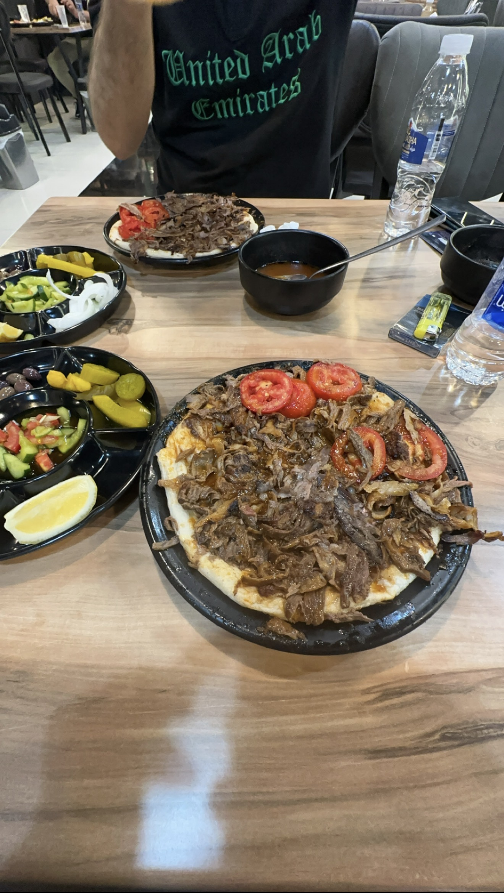

After dinner in Mosul
Two plates on the table. Brake lights through the windshield. Then a whole street lit up in purple.

Press play, or jump to a stop:
Two plates on the table. Brake lights through the windshield. Then a whole street lit up in purple.

Press play, or jump to a stop: